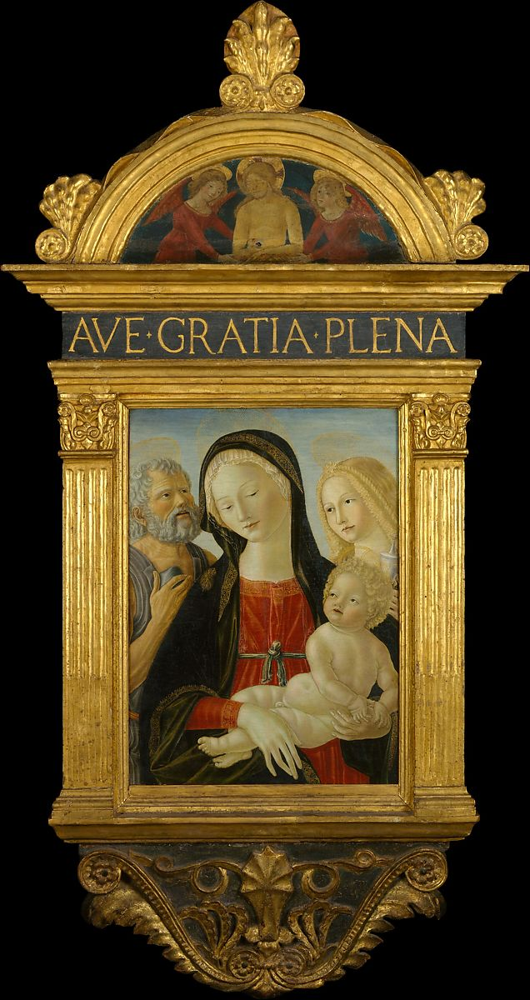

<head>
<meta charset="UTF-8" />
<meta name="keywords" content="drawing, painting" />
<meta name="description" content="drawings by Sunjy" />
<title>Sunjy</title>
<link rel="shortcut icon" type="image/x-icon" href="../../mImages/mCommon/favicon.ico" media="screen" />
<link rel="stylesheet" type="text/css" href="../../mCsses/mCommon/mCssA.css" />
<link rel="stylesheet" type="text/css" href="../../mCsses/mCommon/mCssB.css" />
<link rel="stylesheet" type="text/css" href="../../mCsses/mCommon/mCssC.css" />
<link rel="stylesheet" type="text/css" href="../../mCsses/mCommon/mCssD.css" />
<link rel="stylesheet" type="text/css" href="../../mCsses/mContent/mCssA.css" />
<link rel="stylesheet" type="text/css" href="../../mCsses/mContent/mCssB.css" />
<link rel="stylesheet" type="text/css" href="../../mCsses/mContent/mCssC.css" />
<link rel="stylesheet" type="text/css" href="../../mCsses/mContent/mCssD.css" />
</head>
<script type="text/javascript" src="../../mScripts/mContent/mContentAA.js" /></script>
<script type="text/javascript" src="../../mScripts/mContent/mContentAB.js" /></script>
<script type="text/javascript" src="../../mScripts/mContent/mContentAC.js" /></script>
<script type="text/javascript" src="../../mScripts/mContent/mContentAD.js" /></script>
<script type="text/javascript"></script> 
<script type="text/javascript">
document.write('<div class="mImgAbsolute"></div>');
/*
document.write('<p class="mFontSizeBColor" />From a white paper...</p>');
document.write('<table class="center"><tr><td>');
document.write('');
document.write('</td></tr></table>');
*/
</script>


<script type="text/javascript">
document.write('<p class="mFontSizeBColor" />Madonna and Child with Saints Jerome and Mary Magdalen</p>');
document.write('<p class="mFontSizeSColor" />By Neroccio de&#39; Landi, ca. 1490. A sculptor as well as a painter, Neroccio de&#39; Landi was one of the most accomplished artists of late-fifteenth-century Siena. His work centered on devotional images of the Madonna and Child; this one dates about 1490. The format—with two accompanying saints set behind the Virgin—was conventional in Siena, but Neroccio&#39;s lyrical, relief-like treatment of the figures and his emphasis on surface refinement are peculiar to him.<br><br>The frame is not original to the picture but was designed by the great architectural engineer-sculptor-painter Francesco di Giorgio, with whom Neroccio shared a workshop between 1468 and 1475.</p>');
document.write('<table class="center" /><tr><td>');
document.write('<br>The frame is not original to the picture but was designed by the great architectural engineer-sculptor-painter Francesco di Giorgio, with whom Neroccio shared a workshop between 1468 and 1475." />');
document.write('</td></tr></table>');
</script>


